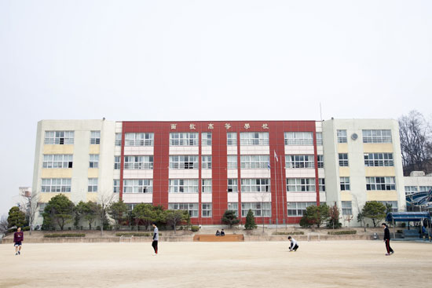

面牧高等學校
Myeonmok High School

정식 교표는 이거다.
면목의 초성인 ㅁㅁ이 합쳐진 모습으로, 두 사각형 안에는 고등학교를 상징하는 髙 자가 박혀있다.
학교를 소개할 떄 "기숙사가 있는 자율형 공립고등학교"라고 설명하나 실상은 30명도 안돼 매 분기 적자이다.(참고로 전교생은 632명)
기숙사생이 하도없어 매년 신입생을 2월쯤에 1박2일로 강제 올해는 신종 코로나로 그짓도 못하여 기숙사의 적자 폭은 더 커질것이다.
(이것에 대한 인식이 매우 않좋다. 누가 처음보는 친구하고 1박2일을 하고싶겠나...)
용마산 푸른 정기 기개 드높고
한강수 유유히 흐르는 터전
겨레의 예지 모아 세워진 이곳
누리에 넓게 퍼질 학문의 전당
성실한 마음 속에 진리가 숨쉰다
영원히 빛나라 우리 면목고등학교
찬란한 아침해를 바라보면서
세계 향한 웅지를 가슴에 담고
높은 얼 굳센 기상 길러나아가
반석 위에 빛나는 횃불이 되자
성실한 마음 속에 진리가 숨쉰다
영원히 빛나라 우리 면목고등학교
이것이 면목고등학교의 교가이다.(하지만 대부분의 학생이 교가를 모르며 입학식때와 졸업식 외에는 잘 듣지도 않는다. )
1학년 신입생들은 OBT와 음악시간에 교가와 오솔레미오를 수행평가로 본다.
서울특별시 장학사 출신이신 송현섭 교장선생님은 면목고등학교를 위해 열심히 일하시며 실제로 학교의 성적이 갈수록 향상하고있다.
(20학년도 기준 서울대 1명, 카이스트 1명, 고려대 3명, 의예과 3명)
2018년에 손션섭 교장선생님이 취임하신 이후 학교가 많이 좋아졌으며, 선택교과에 과학고와 국제고에 있는 심화수학, 국제정치 등을 배치하는등 많은 노력을 하신다.
강정규 교감선생님 또한 포근한 이미지로 학교의 일들을 일선에서 직접 수행하시며 학생들의 말에 일일이 귀 기울이시며 옆에서 든든한 지원자가 되어주신다.